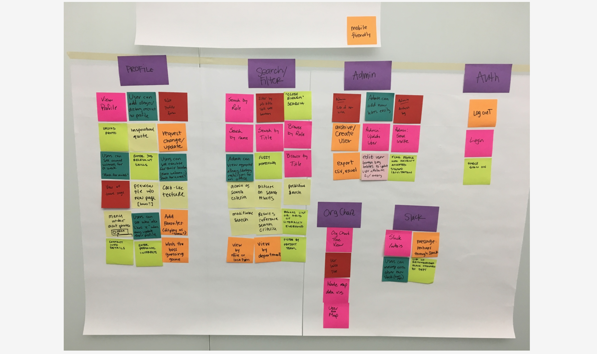
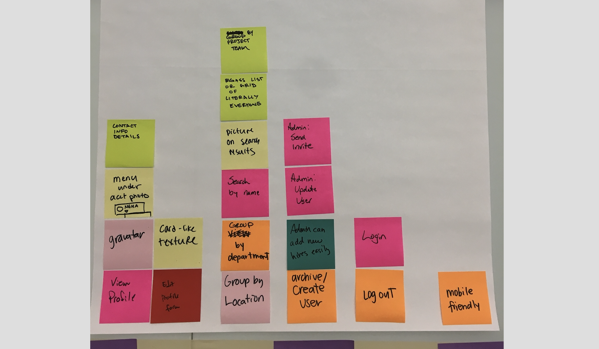
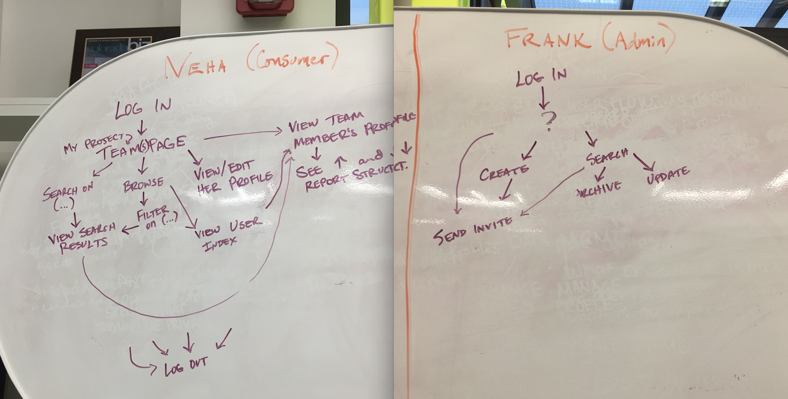
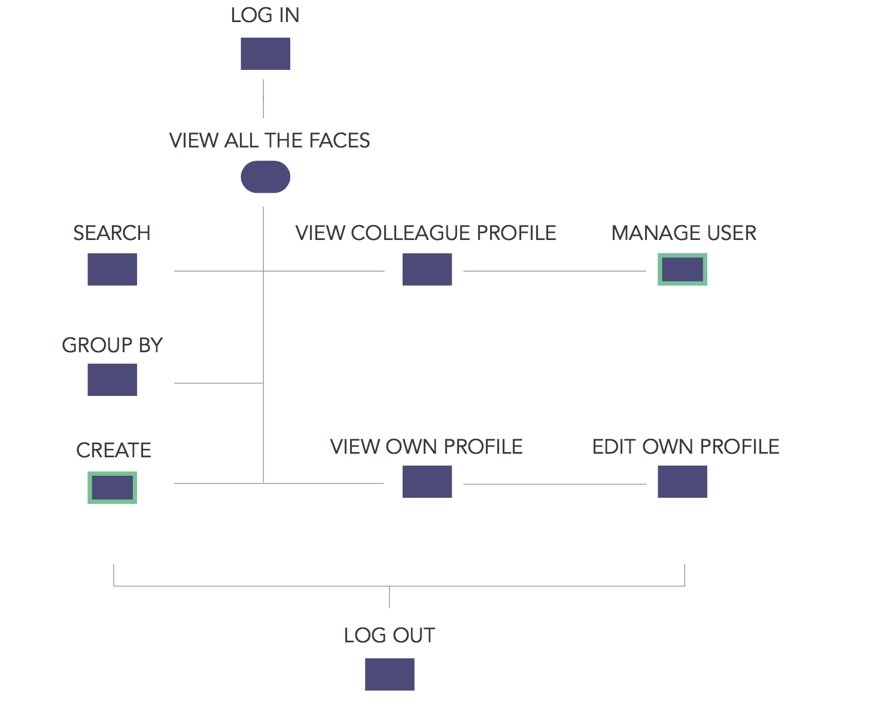
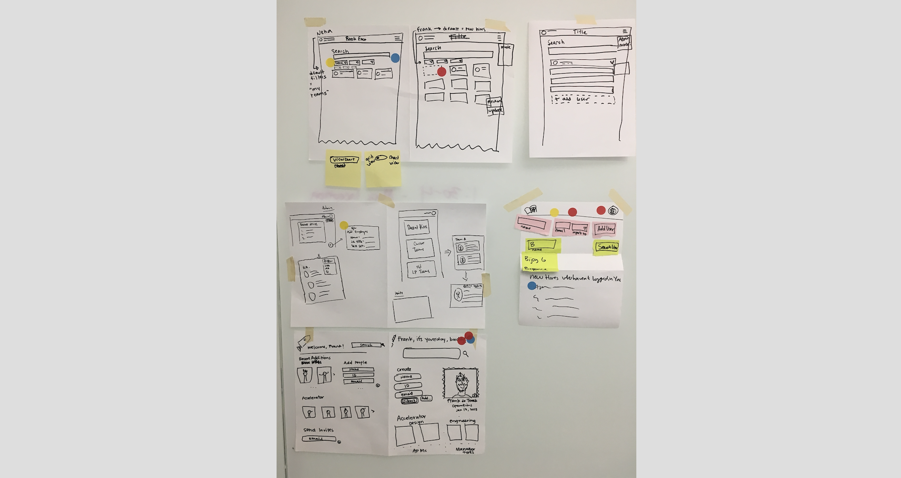
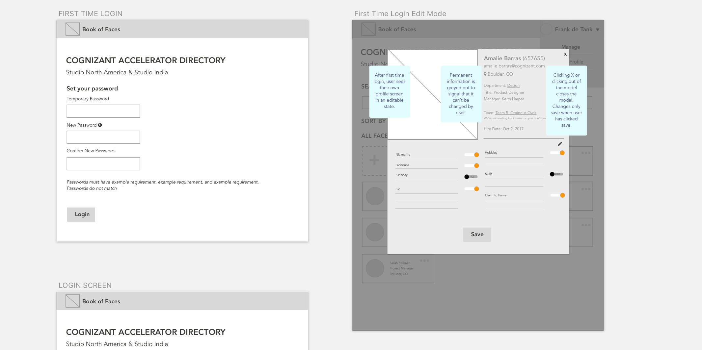

Problem
In 2017 I joined the Cognizant Accelerator. In my experience, it was very easy to meet and get to know people. The office in Boulder has weekly all-hands meetings, lunch-and-learns, and happy hours. What I realized after a couple months though, is that the Accelerator expands way beyond just the people I see every day in Boulder. We also have coworkers in India, Boston, Portland, and more. It’s hard to keep track of folks you don’t see every day! The idea of Book of Faces was to create a tool to enable employees at accelerator to look each other up by name and face, creating a closer connection to our counterparts in other places. We had two months, a project manager, eight developers, and a designer (me!).
Process
Inception
As with all projects at Accelerator, we kicked off with a milestone called “inception”. This is where all clients, PM’s designers, and developers working on the project get together for a day and develop the idea, as well as scope the MVP. We didn’t have any built-in time to do formal user research, but because everyone in the room was in the target demographic, that felt like an okay compromise. The first thing we did during inception was nail down our user types. We knew we’d have an admin view and a user view. In order to get on the same page about the needs of users, we profiled them using what we knew about our coworkers.

Based on an understanding of some of our user’s needs, we brainstormed all the possible features that could built given no time constraints and no budget.
As fun as this is, time constraints and budget are a reality we have to deal with, so we have to scope down the feature set to what we wanted to build for our MVP.
Once we understood what features we’d need to build, we could start drafting flows to create the cohesive experience.
Drawing this out helped us to see that the flows for the admin and the consumer weren’t as different as we had initially thought. We used it to the identify the areas of overlap and consolidate the user flows into one visualization. The actions outlined in green below are unique to the admin users.
The last thing we did during inception was take some quiet time to sketch out ideas for what we thought the landing screen for each user could look like. Then, we pinned up all the sketches, talked through some of the rationale, and then voted on ideas that we liked the best.
We came out of inception with personas, flows, sketches, and a feature list for MVP. While this isn’t the most robust design thinking application ever conceived, it’s a great way to quickly get a product from a seedling of an idea, to a starter plant in the ground.
Discovery
The developers worked on turning our feature list into stories in Pivotal Tracker. Then, they got to work on setting up the app, servers, and other “backendy” things.
Meanwhile, I worked on fleshing out the sketches from inception, into workable wireframes. I like to use annotations on wireframes during the early phases of feedback, so the developers can get a sense of what’s going on. I usually take them out when I start to layer in the UI.
Even in the wireframe phase, I use symbols in sketch so that I can work on UI one component at a time. Since the prototype is synced to invision, my changes can be implemented iteratively as they are released.

Prototyping & Testing
Once the prototype was built, and before nailing down the UI, I did a round of usability testing with a few coworkers. It helped me to get a feel for where users were getting stuck and what UI elements I should focus on.
View clickable prototype that I tested with my coworkers
Hardening
I think of layering in UI as “hardening” for agile teams building MVP’s because it’s not make or break to the idea and can be prioritized last. But that means that hardening starts basically after discovery, and a few sprint’s worth of feedback and testing.

Most of the feedback I got from usability testing was that the buttons didn’t look clickable, the toggles were off, and it felt flat in general. This was great feedback because it informed my final UI decisions. I knew we should use ReactMD because of its ease of implementation and compatibility with the code base. I used their “paper” texture, their color scheme to implement contrast into the features that you could interact with in order to draw users to those, and their tab UI to navigate between different ways of sorting colleagues.
Once the design was as final as it would get before MVP, I decided to get into the code to help implement some of those styles. I pulled down the code from github and created my own design branch so I didn’t mess up any of the code that was in flight in the app. I had to pull down both the client and the server code so that I could run the app locally.

But once I did that, I could use my normal workflow of atom + inspect element to incorporate changes into the app.

I mostly focus on colors, font sizes, and cleaning up messy CSS that I find throughout the app. Occasionally I will add a card wrapper and have to get into the JS, but I usually stay out of those files so I don’t break any functionality.
Takeaways
I loved using this process to test out our team's dynamics and workflows. Tha main realization was that this team tends to move forward on assumptions, and I as a researcher and designer have to adjust my process and make not-all-the-way informed decisons to get our products out the door. Going forward, I made it my mission to advocate to make time for some scrappy validation upfront, so that we can start with some questions answered and know that our work is going toward something meaningful.